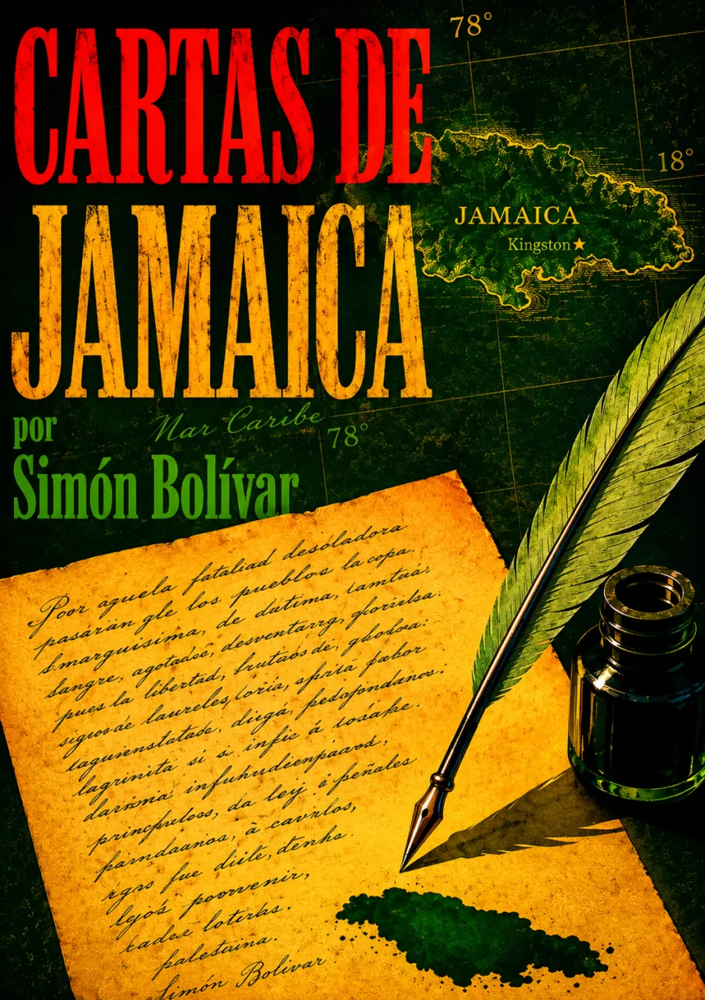

El futuro no era una certeza
Desde Kingston, el 6 de septiembre de 1815, Simón Bolívar responde a las preguntas sobre la situación y el porvenir de la América española. En el exilio, examina la herencia colonial, la guerra de independencia y las dificultades de construir nuevos gobiernos.
La carta no contempla un destino cumplido: argumenta desde la incertidumbre.
Sus propuestas de organización política y unión americana conviven con diferencias regionales y obstáculos que el propio autor reconoce. Leerla exige distinguir el diagnóstico, la aspiración y la conjetura: es una intervención política situada, no una descripción neutral ni una profecía inevitable.
Se conserva el título de la portada, Cartas de Jamaica; esta lectura corresponde a la Carta de Jamaica del 6 de septiembre de 1815. Texto de referencia: Biblioteca Digital del ILCE. La cabecera es una interpretación artística del contexto caribeño, no una reconstrucción del lugar donde se redactó.
La lectura
Carta de Jamaica · Lectura completa
Claves de escucha: dominio colonial, independencia, formas de gobierno y unión americana. Son orientaciones de lectura, no capítulos originales.
Reseñas

Bueno